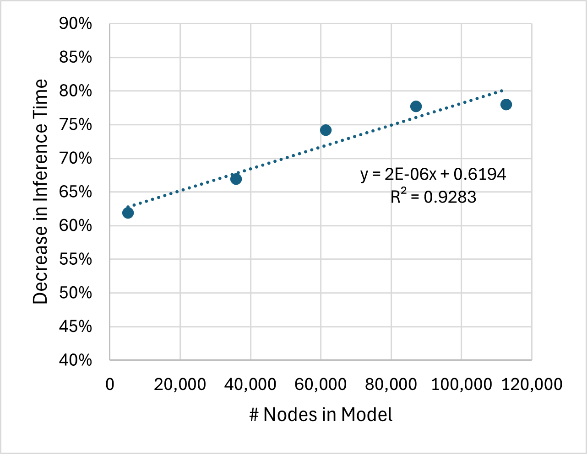
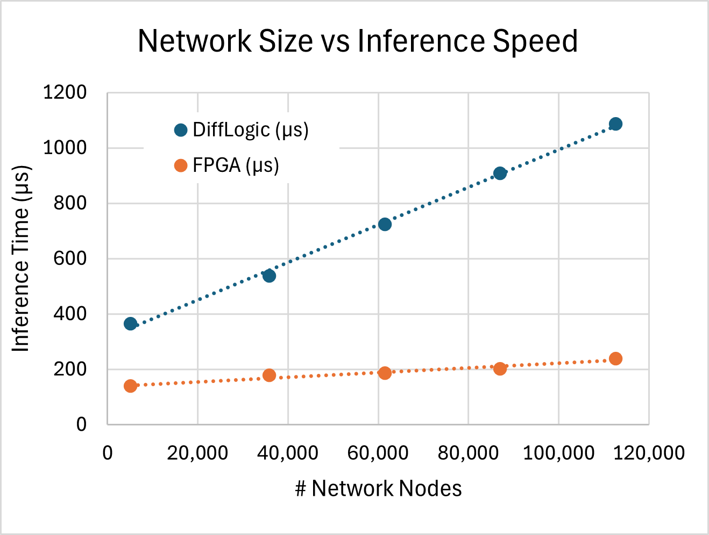

Neural inference,
rebuilt from logic gates.
EcoLogic trains Differentiable Logic Gate Networks and compiles them straight to synthesizable Verilog and VHDL, cutting inference time by 62-78% on a DE10-Lite FPGA.
Most Popular, UF Gator Hack III, 2024
Logic gate playground
This is the substrate EcoLogic runs on: a fixed network of two-input logic gates, no multiplies anywhere. Toggle the input bits and watch values propagate through the layers. Click any gate to cycle it through the 16 two-input boolean operations the compiler emits as Verilog.
An illustrative toy, not the trained model: the real EcoLogic networks execute binarized MNIST inference through hundreds of thousands of these gates, with every gate's operation learned during training rather than clicked into place.
What it is
EcoLogic is a neurosymbolic AI project that implements the DiffLogic architecture on a DE10-Lite FPGA to achieve high-speed, low-power inference. Instead of running a neural network through multiply-accumulate arithmetic, DiffLogic trains a network of two-input logic gates, and EcoLogic compiles that trained gate network directly into synthesizable Verilog and VHDL. The project also integrates IBM's watsonx.ai platform for AI-driven analysis, targeting real-time applications such as disaster response while addressing the energy demands of data centers.
Built by Matheus Kunzler Maldaner with Landon Nayab, Raul Valle, and Stephen Wormald, EcoLogic won the Most Popular award at UF Gator Hack III and grew into part of Matheus's undergraduate thesis work on differentiable logic networks.
How it works
Train DiffLogic models
A PyTorch pipeline trains networks of differentiable logic gates on MNIST, with configurable preprocessing such as border removal, binarization, even class partitioning, and downscaling to 16x16 or upscaling to 32x32 inputs.
Compile gates to HDL
Each learned gate resolves to one of 16 boolean operations. A converter walks the trained layers and emits a synthesizable logic_network module in Verilog or VHDL, wiring the gates layer by layer.
Synthesize on the FPGA
The generated HDL is simulated with ModelSim testbenches and synthesized in Quartus for the DE10-Lite board, with MNIST test images loaded through a memory initialization file.
Verify and analyze
Hex outputs read back from the FPGA are checked against the software model's predictions on the same data, and IBM watsonx.ai scripts handle data generation and logic-analyzer debugging.
Results
Measured inference time of the FPGA implementation against the software DiffLogic baseline, across network sizes.
| Nodes | DiffLogic (µs) | FPGA (µs) | Decrease |
|---|---|---|---|
| 512,000 | 365.70 | 139.46 | -62% |
| 3,584,000 | 537.89 | 177.90 | -67% |
| 6,144,000 | 724.20 | 186.76 | -74% |
| 8,704,000 | 907.78 | 202.54 | -78% |
| 11,264,000 | 1086.52 | 239.18 | -78% |


Numbers reproduced from the project repository's benchmarks.
Tech stack
Explore further
EcoLogic repository →
Training notebook, HDL converters, Quartus and ModelSim projects, and pre-trained models.
DiffLogicVisualizer →
Companion tool for visualizing differentiable logic gate networks.
ExpLogic paper →
Related research on explaining logic networks, on arXiv.
Devpost + demo video →
Hackathon submission page, with the original demo on YouTube.